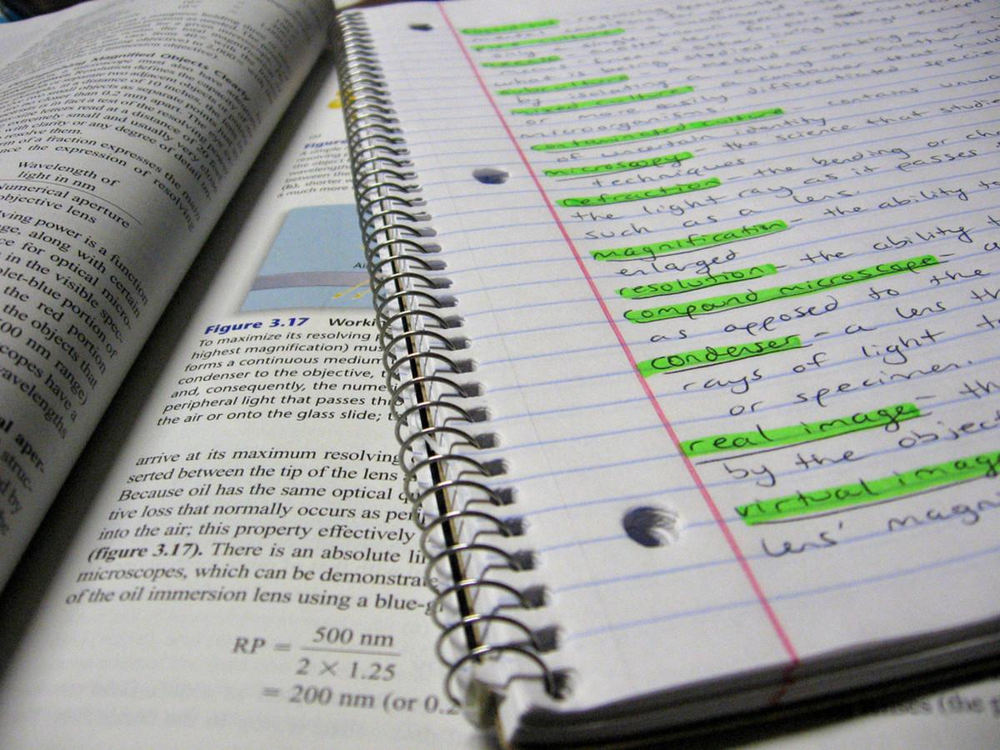

How to Improve Your Exam Time Management
Practical strategies to help you work more efficiently, manage time pressure and maximise your marks in exams.
Running out of time in an exam can be frustrating, particularly when you understand the material but struggle to complete the paper. Effective time management is a skill in its own right. It involves more than simply working quickly. You need to make sensible decisions about which questions to attempt, how much time to spend on them and when to move on.
There are several ways to improve your exam technique and become more efficient under time pressure. The following strategies are particularly useful for subjects such as Mathematics and Physics, where questions can vary significantly in difficulty and the amount of time they require.

1. Make Effective Use of Reading Time
Reading time is an opportunity to familiarise yourself with the paper before you begin answering questions. Rather than simply reading each question from beginning to end, use this time to identify which questions are likely to be straightforward and which may require more thought.
Try to identify questions that involve familiar concepts, multiple steps of working or unfamiliar applications of the material. This gives you an initial idea of how to approach the paper and where you may need to allocate more time.
Remember that the number of marks allocated to a question does not necessarily reflect how difficult or time-consuming it will be. A question worth only a few marks may require considerable thought, while a higher-mark question may involve a relatively familiar method.
2. Allocate Your Time According to Question Length and Difficulty
A useful starting point is to allocate time according to the number of marks available for each question. This helps prevent you from spending too long on questions worth relatively few marks while leaving insufficient time for longer responses.
The following table provides a rough guide for how long different questions might take. These estimates assume that you are working at a reasonable pace and should be adjusted according to the difficulty of the question.
| Question value | Suggested time |
|---|---|
| 1–2 marks | 1–2 minutes |
| 3–4 marks | 3–5 minutes |
| 5–6 marks | 6–8 minutes |
| 7–8 marks | 9–12 minutes |
| 9–10 marks | 12–15 minutes |
These timings are approximate rather than fixed rules. Always consider the complexity of the question and the total time available in your exam.
It is also important to recognise that HSC Mathematics and Physics papers often become progressively more challenging. Questions towards the beginning of a paper are generally more straightforward, while later questions may require more complex calculations, multiple steps of reasoning or a deeper understanding of the underlying concepts.
This means you should not necessarily expect to spend the same amount of time on every question, even when they are worth a similar number of marks. Aim to complete earlier questions efficiently so that you have sufficient time to work through the more demanding problems towards the end of the paper.
Remember: Use the marks allocated to a question as a starting point, but adjust your timing according to its difficulty. Avoid rushing through straightforward questions, but do not let a particularly difficult problem consume time that could be spent securing marks elsewhere.
3. Know When to Move On
One of the most important exam skills is recognising when to stop working on a question. If you are stuck and are no longer making meaningful progress, it is usually better to move on and return to the question later.
Spending several minutes trying to solve one difficult question can mean losing the opportunity to answer multiple questions that you could have completed. Your goal should be to maximise the marks you obtain across the entire paper, rather than necessarily completing every question in order.
This is particularly relevant for multiple-choice questions. Some questions may be relatively straightforward in principle but require a lengthy calculation or several steps to reach the answer. If one is taking too long, mark it and move on before returning to it later.
A useful rule: If you are not making progress, do not keep repeating the same approach. Move on, secure marks elsewhere and return with a fresh perspective.
4. Practise Under Greater Time Pressure
A useful way to improve your time management is to practise completing papers in less time than you would normally be given. I refer to this as pressure training.

For example, you could attempt a Mathematics Advanced paper in 90 minutes, even if the actual examination allows more time. This forces you to make decisions more quickly, recognise familiar question types and become more efficient with your working.
Over time, this can make the actual examination feel less pressured. You have already practised working under tighter constraints, so the standard examination time provides a greater margin for checking answers and working through more difficult questions.
Start with a manageable reduction in time rather than immediately trying to complete a paper at an unrealistic pace. The objective is to improve your efficiency while maintaining accuracy, not to rush through questions and develop careless habits.
5. Improve Your Writing and Problem-Solving Efficiency
Small improvements in how you write and structure your working can save a considerable amount of time over the course of an exam. Practise writing more quickly while keeping your handwriting sufficiently clear for an examiner to follow.
In Mathematics, consider whether there is a more efficient way to approach a problem. Different methods can sometimes produce the same result with fewer steps. Avoid unnecessary working, particularly when you are already confident in the method being used.
In Physics, make sure you are familiar with the equations and concepts you are likely to need. Being able to identify the relevant relationship quickly can reduce the time spent deciding how to approach a problem.
However, efficiency should not come at the expense of accuracy or clarity. Skipping too many steps or relying on unfamiliar shortcuts can increase the likelihood of mistakes. You should use methods that you can apply consistently and that clearly demonstrate your understanding.
Final Thoughts
Effective exam time management comes from a combination of preparation, decision-making and practice. Make good use of reading time, allocate time according to the marks and difficulty of each question, recognise when to move on from difficult problems, and practise under tighter time constraints.
Ultimately, the aim is not simply to finish the paper as quickly as possible. It is to use your available time effectively, maintain accuracy and give yourself the best opportunity to demonstrate what you know.